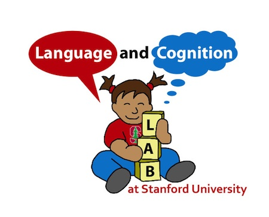

How do we go from being speechless infants to toddlers who can talk and understand language? Underlying this question is one of the most compelling computational challenges in Cognitive Science: acquiring a natural language by observing and interacting with other people. Research in the Language and Cognition lab uses computational models and experiments with infants, children, and adults to try and understand human language acquisition and its relationship to other aspects of cognition, including social interaction and conceptual structure.